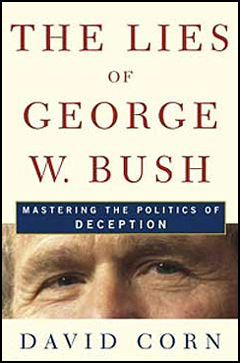

A False Restoration
The introduction to The Lies of George W. Bush: Mastering the Politics of Deception
- - - - - - - - - -
by David Corn
"Some people think it's inappropriate to draw a moral line. Not me. For our children to have the lives we want for them, they must learn to say yes to responsibility . . . yes to honesty."
- George W. Bush, June 12, 1999
EORGE W. BUSH IS A LIAR. He has lied large and small. He has lied directly and by omission. He has misstated facts, knowingly or not. He has misled. He has broken promises, been unfaithful to political vows. Through his campaign for the presidency and his first years in the White House, he has mugged the truth -- not merely in honest error, but deliberately, consistently, and repeatedly to advance his career and his agenda. Lying greased his path toward the White House; it has been one of the essential tools of his presidency. To call the 43rd president of the United States a prevaricator is not an exercise of opinion, not an inflammatory talk-radio device. This insult is supported by an all too extensive record of self-serving falsifications. So constant is his fibbing that a history of his lies offers a close approximation of the history of his presidential tenure.
While politicians are often derided as liars, this charge should be particularly stinging for Bush. During the campaign of 2000, he pitched himself as a candidate who could "restore" honor and integrity to an Oval Office stained by the misdeeds and falsehoods of his predecessor. To brand Bush a liar is to negate what he and his supporters claimed as his most basic and most important qualification for the job; it is a challenge, in a sense, to his legitimacy. But it is a challenge fully supported by his words and actions, as well as those of the aides and officials who speak and act for him. The list of falsehoods is long. And only one man bears responsibility for that -- the fellow who campaigned in an airplane christened Responsibility One.
Does the truth matter to Bush? No more than winning office, gaining a political advantage, or prevailing in a policy dispute. He has lied not only to cover up inconvenient matters or facts, or out of defensiveness when caught in a contradiction or an uncomfortable spot. He has engaged in strategic lying -- that is, prevaricating about the fundamental elements of his presidency, including his basic goals and his own convictions. He has used lies to render himself and his ideas more enticing to voters and the public. And that raises the question: has lying been critical to his success? Were Bush and his proposals -- unadorned by fiction -- not sufficiently appealing?
A liar in the White House is not a remarkable development. Most presidents lie, many brazenly and with impunity. Only a few have had to pay a political cost for their dissimulations. In 1840, William Henry Harrison, the Whig candidate for president, told potential voters he had been born in a log cabin. Not true at all. He was a scion of an aristocratic family, and he had grown up in a red-brick mansion on the James River in Virginia. But he won the contest. Twenty years later, Abraham Lincoln -- his supporters hailed him as "Honest Abe" -- was running for president, and advocates presented Lincoln to voters as a country lawyer. No -- he had been reared in rural Illinois, but by the time he was a presidential wannabe, he had become one of the nation's leading attorneys, representing railroads and other corporations.
In more recent decades, presidents have lied to get their way or hide embarrassing truths. In a pre–Pearl Harbor fireside chat in 1941, Franklin Delano Roosevelt, looking to persuade Americans that the nation should side with Britain in its war against Nazi Germany, reported that a German submarine had launched an unprovoked attack on the USS Greer. Left unsaid was the fact that the Greer had been cooperating with a British naval effort to find the sub and destroy it. On August 9, 1945, three days after the United States struck Hiroshima with an atomic bomb, Harry Truman, in a radio speech, said, "The world will note that the first atomic bomb was dropped on Hiroshima, a military base. That was because we wished in this first attack to avoid, in so far as possible, the killing of civilians." Yet Hiroshima was a city, not a military base. Its population at that time included about 350,000 civilians. In May 1960, when the Soviet Union announced it had shot down an American U-2 spyplane flying over its territory, Dwight Eisenhower had his aides say that this aircraft had been only a weather plane that had wandered 1,500 miles off course. But after Moscow produced wreckage of the plane and the pilot of the aircraft, the Eisenhower administration publicly conceded it had been conducting U-2 overflights. At the time, many Americans were genuinely shocked that a White House had lied. Later, Eisenhower explained why he had subordinates spin for him during the U-2 episode: "When a president has lost his credibility, he has lost his greatest strength."
John Kennedy, while campaigning in 1960, declared that the United States was on the wrong side of a dangerous missile gap with the Soviet Union. But there was no missile gap in the Soviet's favor, and Kennedy had received classified briefings reporting that. In August 1964, Lyndon Johnson told congressional leaders that two American destroyers were attacked without provocation by the North Vietnamese in international waters in the Gulf of Tonkin. He asked Congress to immediately pass legislation approving a retaliatory attack, and Congress obliged. Years later, the public learned Johnson had misled Congress.
Richard Nixon lied about Vietnam (as a candidate he claimed he had a secret plan "to end the war, and win the peace," but he did not; as the president, he denied he was covertly bombing Cambodia, when he was). He lied about Watergate, too, declaring famously, "I am not a crook." Turned out he was, and, because he was caught lying, he became the first president to resign.
When the Iran-Contra scandal began to unfold in the fall of 1986, Ronald Reagan said that his administration "did not -- repeat, did not -- trade weapons or anything else for hostages" with Iran and that "there is no [U.S.] government connection" with the efforts to supply weapons to the Contra rebels fighting the Sandinista government in Nicaragua. He was wrong on both counts. Reagan, a champion falsifier who routinely got facts wrong about his own life and important policy matters (most air pollution is caused by trees and plants; submarine-launched nuclear missiles once fired can be recalled), later offered a new and highly original explanation for his Iran-Contra misstatements: "A few months ago I told the American people I did not trade arms for hostages. My heart and my best intentions still tell me that's true, but the facts and the evidence tell me it is not." That is, he lied because he was out of touch with reality.
Reagan's vice president -- a fellow named George Herbert Walker Bush -- also lied about Iran-Contra. When the Iran-Contra affair was first exposed, Bush denied he had been "in the loop." Yet government documents subsequently released disclosed that Bush had attended many high-level administration meetings on the Iran initiative. And in his private diary -- which he managed to withhold from Iran-Contra investigators until December 1992, a month after he lost his reelection bid -- Bush had written, "I'm one of the few people that know fully the details" of the Iran affair. More famously, during his acceptance speech at the 1988 GOP convention, Bush issued a solemn vow: "Read my lips: no new taxes." Two years later, in an attempt to address the budget deficit, he signed legislation raising taxes.
Bill Clinton tried unsuccessfully to escape scandal by lying. "I did not have sexual relations with that woman" has become one of the most well-known presidential falsehoods. The tortuously crafted remarks about his affair with intern Monica Lewinsky that he uttered while giving a deposition in a sexual harassment suit became the basis -- or excuse -- for a Republican impeachment crusade against him. Clinton survived, but his Monica lies tainted his presidency, divided the nation, and handed Bush and the Republicans ammunition to use in the 2000 presidential campaign. He earned less scorn and less trouble for the lies he told about other, more weighty matters. He promised an initiative on race relations and never produced one. On the campaign trail in 1992, he had pitched a "putting people first" agenda that emphasized federal public investments, but in office he embraced deficit reduction as his first priority. In 1998, Clinton visited Rwanda, the site four years earlier of a horrific genocide, and disingenuously remarked, "All over the world there were people like me sitting in offices who did not fully appreciate the depth and speed with which you were being engulfed by this unimaginable terror." The White House had been in-the-know about the massacre while it was occurring. But lying about genocide was apparently not as outrageous as lying about sex.
This very selective history demonstrates there are many varieties of presidential lies. Some concern grand policy matters, some concern secret government activity, some concern personal peccadilloes. Several presidents have misled the public about their health or their status as devoted family men. But what can be considered a lie? Sissela Bok, the author of Lying: Moral Choice in Public and Private Life, defines it simply as "an intentionally deceptive message in the form of a statement." Intentionally? That may get Reagan off the hook -- or any other president who truly believes his own spin. But because presidential lies matter more than most -- they can lead to war, decide elections, break or make vital policy decisions -- I would propose a slightly different standard for White House occupants. If a president issues a statement, he or she has an obligation to ensure the remark is truthful. The same applies to a presidential candidate who, after all, is seeking an office that comes with the ultimate power. It is not enough for a president or White House contender to believe what he is saying is true; he should know it to be true -- within reasonable standards. And for the sake of judging presidents and presidential candidates, the statements of their aides and spokespeople should be measured using the same guidelines, for presidents often send out underlings to speak -- or lie -- for them.
Commanders-in-chief and presidential candidates do commit mistakes and misspeak. Given the amount of information they are expected to possess, this is only natural. Not every error or verbal miscue is a lie. But a president has a duty to acknowledge and correct any significant misstatement he or she utters -- especially if that slip somehow worked to his advantage. An untruth that might have been spoken accidentally becomes a lie if a president and his aides permit it to stand.
In addition to serving as the leader of the nation and the head of the government, the president is an information source. He shares with the public the material gathered by the vast federal government, and often it is information about the most important matters confronting the nation. The public ought to expect a White House to pledge allegiance to accuracy. Citizens in a democracy not only have a right to truth in government, they have a need for it. Without good information, how can they make good decisions?
Yet lies seem essential in politics and government. In a cynical mood, George Orwell once wrote, "Politics itself is a mass of lies, evasions, folly, hatred and schizophrenia." That was unavoidable, he noted, because "political speech" is "largely the defense of the indefensible." Nixon at one point told his friend Leonard Garment, "You're never going to make it in politics, Len. You just don't know how to lie." Did he mean that politics is a down-and-dirty business? Or perhaps he believed that the voting public will not embrace a candidate who doesn't pander to popular biases and sentiments. Maybe Nixon thought that a leader in a complex and sometimes dangerous world did not always have the luxury of telling the truth. Long before Nixon contemplated the role of truth in politics, Plato referred to "noble lies" -- falsehoods told by those in power that supposedly were for the public's own good.
In The Prince, Niccolò Machiavelli noted that honesty in leadership is not always desirable. "How praiseworthy it is that a prince keeps his word and governs by candor instead of craft, everyone knows," he wrote in the early 16th century. "Yet the experience of our own time shows that those princes who had little regard for their word and had the craftiness to turn men's minds have accomplished great things and, in the end, have overcome those who governed their actions by their pledges." Taking a dark view of human interactions, Machiavelli believed that a leader would always find an audience for his lies: "Men are so simple and so much inclined to obey immediate needs that a deceiver will never lack victims for his deceptions." And history's most famous political consultant observed that many "princes who broke faith" gained the advantage. But, he advised, "one must know how to mask this nature skillfully and be a great dissembler."
 Next page | Which brings us to the current president Next page | Which brings us to the current president
1, 2
|